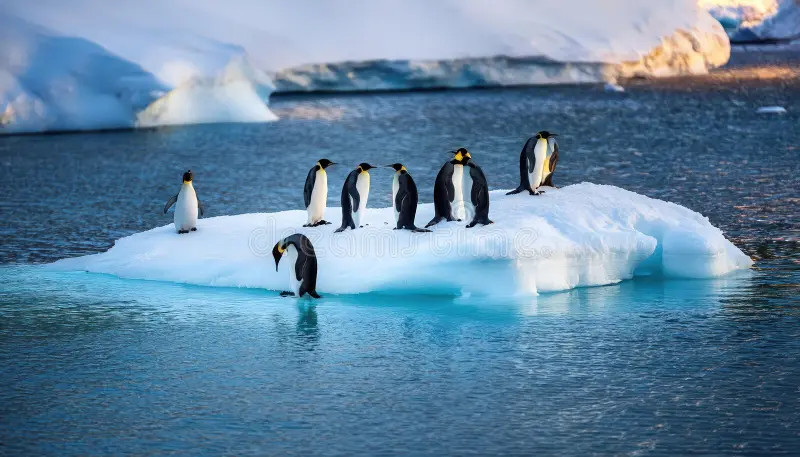
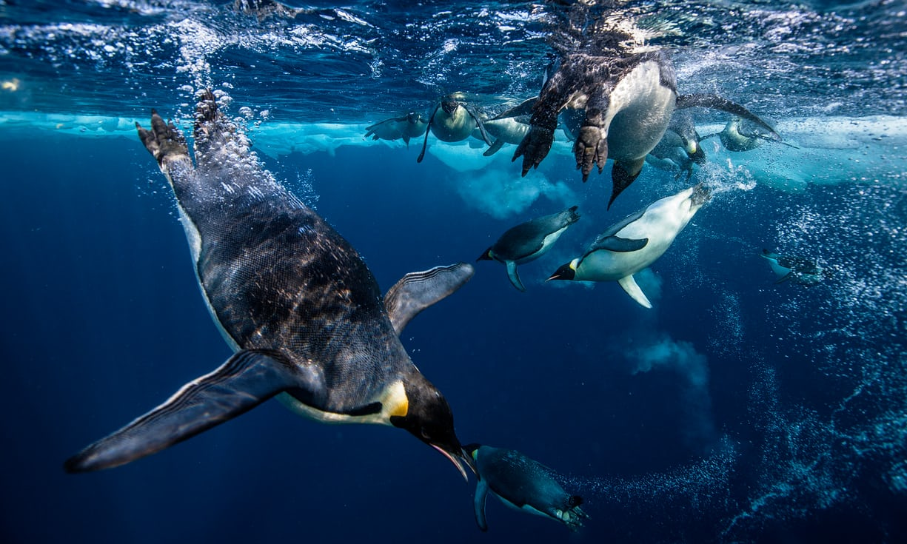
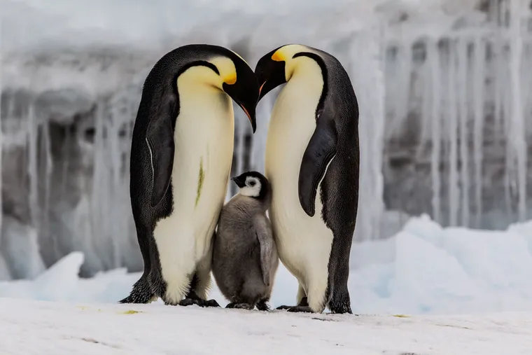

Habitat y Ubicación geografica
El Pingüino Emperador (Aptenodytes forsteri) es una especie endémica de la Antártida. A diferencia de otras aves marinas, habita casi exclusivamente sobre el hielo marino estable que rodea el continente antártico. Se distribuyen en colonias que se ubican entre las latitudes 66° y 78° Sur.
Este entorno extremo les obliga a soportar temperaturas de hasta -60°C y vientos huracanados. Para sobrevivir, han desarrollado un plumaje de múltiples capas y una capa de grasa subcutánea que actúa como aislante térmico natural.

Habitos Alimenticios
Son depredadores expertos y buceadores excepcionales. Su dieta se basa principalmente en:
- Peces: Como el diablillo antártico.
- Crustáceos: Especialmente el krill antártico, que es la base de la cadena alimenticia.
- Cefalópodos: Clamares que atrapan en las profundidades del oceano.
Pueden sumergirse a profundidades de más de 500 metros y permanecer bajo el agua hasta 20 minutos, siendo el ave que bucea a mayor profundidad en el mundo.

Ciclo Reproductivo
Su ciclo es único y heroico. Se reproducen durante el crudo invierno antártico.
- Los adultos viajan entre 50 y 120 km sobre el hielo hasta los lugares de cría.
- Incubación: La hembra pone un solo huevo y se lo entrega al macho para que lo cuide en su "bolsa incubadora" (sobre sus patas).
- El Sacrificio: El macho ayuna por cerca de 65 días protegiendo el huevo del frío, mientras la hembra viaja al mar para buscar alimento.

Ficha Técnica
| Categoría | Información Detallada |
|---|---|
| Nombre Científico | Aptenodytes forsteri |
| Altura Promedio | 115 - 120 cm |
| Peso Adulto | 22 a 45 kg |
| Dieta Principal | Peces, Calamares y Krill |
| Tiempo de Buceo | Hasta 20 minutos |
| Estado de Conservación | Casi Amenazado |
Estado de Conservación
Actualmente, el Pingüino Emperador está clasificado como "Casi Amenazado" por la UICN. La mayor amenaza es el cambio climático, que provoca el derretimiento prematuro del hielo marino. Si el hielo se rompe antes de que los polluelos muden sus plumas impermeables, estos pueden caer al agua y morir. Además, la sobrepesca de krill reduce su disponibilidad de alimento.